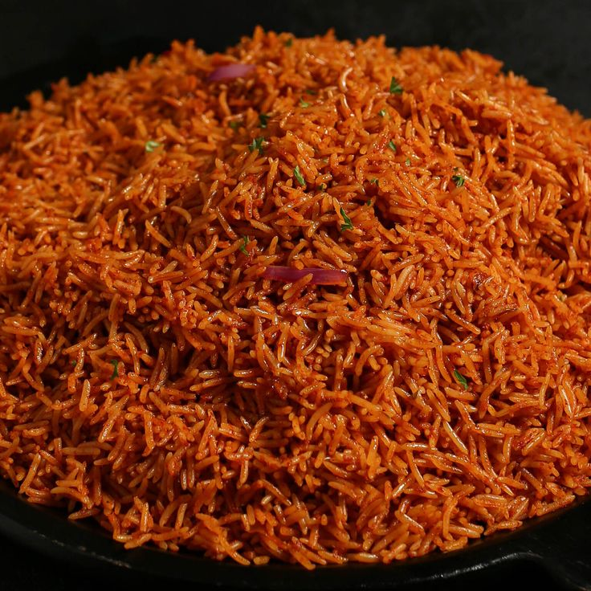
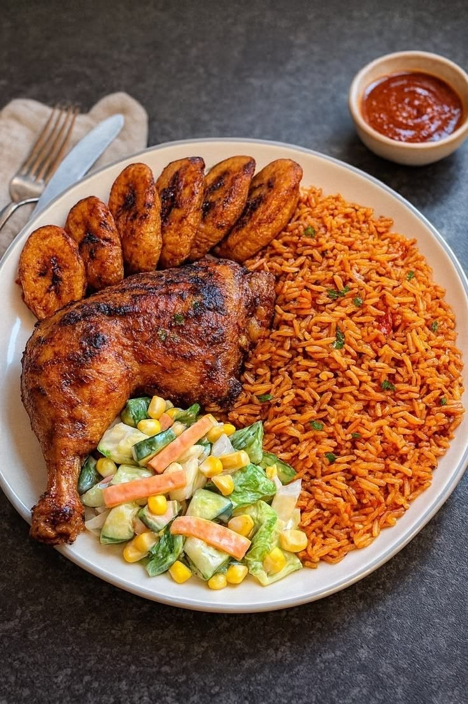

About the Recipe
Nigerian jollof rice is a beloved West African dish prepared with rice, ripe tomatoes, red peppers, onions, and carefully selected spices. Its bright colour, rich tomato sauce, and wonderful aroma make it a favourite at parties, family gatherings, and special occasions.

A delicious rice meal prepared for a satisfying lunch.
Preparation time: 15 minutes
Cooking time: 40 minutes
Servings: 4 people
Fresh Ingredients You Will Need
The secret to tasty jollof rice begins with fresh ingredients and the right blend of seasonings.
- 2 cups of long-grain rice
- 4 fresh tomatoes
- 2 red bell peppers
- 1 medium onion
- 2 tablespoons of tomato paste
- 3 tablespoons of vegetable oil
- 2 cups of chicken stock or water
- Salt and seasoning cubes to taste
- Thyme and curry powder
Step-by-Step Cooking Instructions
Follow these simple steps to prepare rice that is tender, colourful, and full of flavour.
- Wash the rice thoroughly and set it aside.
- Blend the tomatoes, red bell peppers, and onion until smooth.
- Heat the vegetable oil in a pot and fry the tomato paste briefly.
- Add the blended mixture and cook for 10 to 15 minutes to develop a rich tomato flavour.
- Add the seasoning, thyme, curry powder, and chicken stock or water.
- Add the washed rice and stir until it is well coated with the tomato sauce.
- Cover the pot and cook on low heat until the rice is tender and the liquid is absorbed.
- Fluff the rice gently with a fork, serve hot, and enjoy every delicious spoonful.
Delicious Serving Suggestions
Make your jollof rice even more exciting by serving it with tasty sides. Pair it with grilled chicken, fried plantain, fresh salad, or your favourite protein for a colourful and satisfying meal.

Add fresh vegetables and your favourite sides to make mealtime more enjoyable.
What Can You Serve With Jollof Rice?
- Grilled or fried chicken
- Golden fried plantain
- Fresh vegetable salad
- Steamed vegetables
- Grilled fish
Serve the rice while it is warm to enjoy its delicious aroma and rich tomato taste.
The Secret to Rich, Flavourful Jollof Rice
Great jollof rice is all about building flavour. Allow the tomato and pepper mixture to cook properly before adding the rice. This helps reduce the raw tomato taste and creates a deeper, richer flavour.
Freshly prepared food is best enjoyed with carefully balanced seasoning.
Simple Tips for Better Results
- Use ripe tomatoes and fresh red peppers for a naturally rich colour.
- Cook the tomato mixture thoroughly before adding the rice.
- Add water or stock carefully to avoid making the rice too soft.
- Keep the heat low while the rice cooks to help prevent burning.
- Taste the sauce and adjust the seasoning before adding the rice.
With patience and the right ingredients, you can prepare a pot of jollof rice that is colourful, aromatic, and full of delicious flavour.
Nutrition Facts
The table below provides estimated nutritional information for one serving of jollof rice. Actual values depend on the ingredients and portion size.
| Nutrient | Amount |
|---|---|
| Calories | 350 kcal |
| Carbohydrates | 55 g |
| Protein | 6 g |
| Fat | 10 g |
| Fibre | 3 g |
These figures are illustrative estimates and should not be treated as exact nutritional values.
More Cooking Inspiration
Cooking is a great way to explore new flavours and share memorable meals with family and friends. Try different vegetables, seasonings, and side dishes to find your favourite combination.
For more recipes and cooking ideas, visit BBC Good Food Recipes .